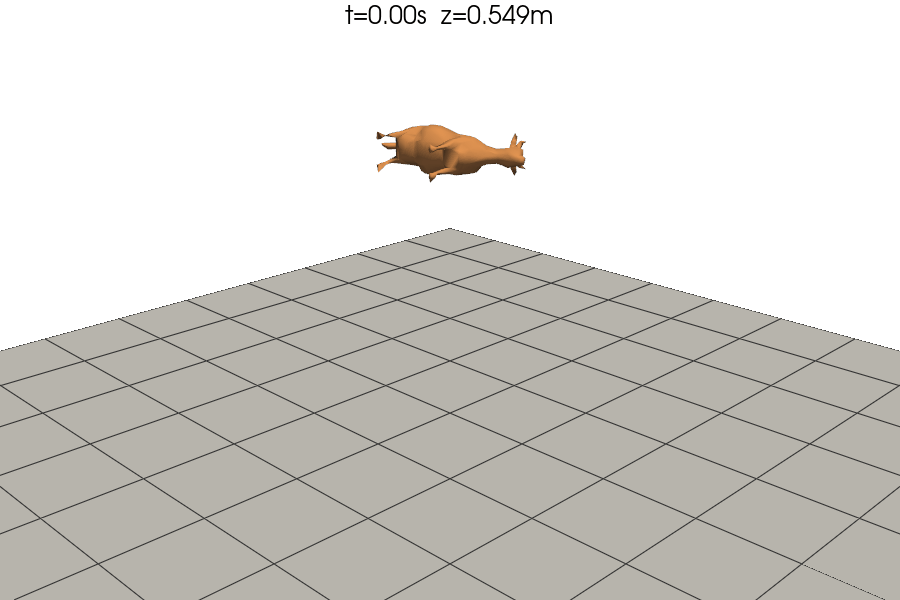

Note
Go to the end to download the full example code.
Cow bouncing on a plane — NonLinear + IPC contact.
The cow mesh from PyVista is watertight (2903 nodes), decimated for speed. Full rotation via quaternion, rotation vectors (no gimbal lock).

============================================================
COW BOUNCE — NonLinear + IPC contact
============================================================
Cow: 292 nodes, mass=1.0kg
t=0.00s z=0.549m contacts=0
t=0.25s z=0.276m contacts=0
t=0.50s z=0.147m contacts=0
t=0.75s z=0.127m contacts=0
t=1.00s z=0.150m contacts=0
t=1.25s z=0.082m contacts=0
t=1.50s z=0.120m contacts=0
t=1.75s z=0.099m contacts=0
4001 steps in 98.8s (24.7ms/step)
z_min=0.0564m
Saved: /home/runner/work/fedoo/fedoo/examples/rigid_body_cow_bounce.gif
import os
import time
import numpy as np
import pyvista as pv
import fedoo as fd
from simcoon import Rotation # required dependency (fedoo imports it at load)
g = 9.81
dt = 5e-4
t_end = 2.0
print("=" * 60)
print("COW BOUNCE — NonLinear + IPC contact")
print("=" * 60)
space = fd.ModelingSpace("3D")
space.new_variable("DispX")
space.new_variable("DispY")
space.new_variable("DispZ")
space.new_vector("Disp", ("DispX", "DispY", "DispZ"))
# Cow mesh
pv_cow = pv.examples.download_cow().triangulate().clean()
size = max(
pv_cow.bounds[1] - pv_cow.bounds[0],
pv_cow.bounds[3] - pv_cow.bounds[2],
pv_cow.bounds[5] - pv_cow.bounds[4],
)
pv_cow = pv_cow.scale(0.3 / size, inplace=False)
pv_cow = pv_cow.translate(
[-pv_cow.center[0], -pv_cow.center[1], -pv_cow.bounds[4] + 0.5], inplace=False
)
pv_cow = pv_cow.decimate(0.9).triangulate().clean()
cow_mesh = fd.Mesh.from_pyvista(pv_cow)
# Plane
pv_plane = pv.Plane(
center=(0, 0, 0),
direction=(0, 0, 1),
i_size=2.0,
j_size=2.0,
i_resolution=8,
j_resolution=8,
)
plane_mesh = fd.Mesh.from_pyvista(pv_plane.triangulate())
# Rigid body
mass = 1.0
bb = pv_cow.bounds
lx, ly, lz = bb[1] - bb[0], bb[3] - bb[2], bb[5] - bb[4]
I = (mass / 12) * np.diag([ly**2 + lz**2, lx**2 + lz**2, lx**2 + ly**2])
body = fd.constraint.RigidBody(
cow_mesh,
mass=mass,
inertia_tensor=I,
center_of_mass=np.array(pv_cow.center),
name="Cow",
)
body.set_force([0, 0, -mass * g])
body.set_rayleigh_damping(1.5)
body.set_static_obstacle(plane_mesh, dhat=0.01)
print(f" Cow: {cow_mesh.n_nodes} nodes, mass={mass}kg")
# Solve with NonLinear (manual stepping for trajectory)
pb = fd.problem.NonLinear(body.assembly)
pb.set_time_integrator(fd.time.SECOND_ORDER, fd.time.Newmark())
pb.initialize()
idx = body.assembly._dof_indices
q_hist = [np.zeros(6)]
t_hist = [0.0]
n_steps = int(round(t_end / dt))
t0 = time.time()
for step in range(n_steps):
pb.dtime = dt
pb.solve_time_increment()
pb.set_start()
dof = pb.get_dof_solution()
q_hist.append(dof[idx].copy())
t_hist.append((step + 1) * dt)
if step % 500 == 0:
n_c = (
len(body.assembly._ipc_collisions)
if body.assembly._ipc_collisions is not None
else 0
)
print(
f" t={(step+1)*dt:.2f}s z={body.center_of_mass[2]+dof[idx[2]]:.3f}m contacts={n_c}"
)
elapsed = time.time() - t0
t_hist = np.array(t_hist)
q_hist = np.array(q_hist)
z_hist = body.center_of_mass[2] + q_hist[:, 2]
print(
f"\n {len(t_hist)} steps in {elapsed:.1f}s ({elapsed / len(t_hist) * 1000:.1f}ms/step)"
)
print(f" z_min={z_hist.min():.4f}m")
# Animation
_here = os.path.dirname(__file__) if "__file__" in globals() else os.getcwd()
gif_path = os.path.join(_here, "rigid_body_cow_bounce.gif")
fps = 25
frame_skip = max(1, int(1.0 / (fps * dt)))
frame_indices = np.arange(0, len(t_hist), frame_skip)
vis_cow = pv_cow.copy()
pts_ref = vis_cow.points.copy()
center = body.center_of_mass
vis_plane = pv.Plane(
center=(0, 0, 0),
direction=(0, 0, 1),
i_size=2.0,
j_size=2.0,
i_resolution=10,
j_resolution=10,
)
pl = pv.Plotter(window_size=[900, 600], off_screen=True)
pl.set_background("white")
pl.add_mesh(vis_plane, color="lightgrey", opacity=0.8, show_edges=True)
pl.add_mesh(vis_cow, color="sandybrown", smooth_shading=True)
pl.camera_position = [(1.5, -1.5, 1.0), (0, 0, 0.25), (0, 0, 1)]
pl.open_gif(gif_path, fps=fps)
for i in frame_indices:
qi = q_hist[i]
R = Rotation.from_rotvec(qi[3:]).as_matrix()
vis_cow.points[:] = (pts_ref - center) @ R.T + center + qi[:3]
vis_cow.GetPoints().Modified()
pl.add_text(
f"t={t_hist[i]:.2f}s z={z_hist[i]:.3f}m",
position="upper_edge",
font_size=11,
color="black",
name="title",
)
pl.render()
pl.write_frame()
pl.close()
print(f" Saved: {gif_path}")
Total running time of the script: (1 minutes 50.807 seconds)